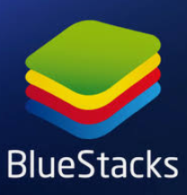

je program, který umožňuje běh počítačových programů na jiné platformě (architektuře, operačním
systému), než pro kterou byly původně vytvořeny a kterou samy od sebe podporují. Typickým příkladem
emulátoru je program umožňující běh videoher známých z herních konzol na běžném PC pod MS Windows nebo
Linuxem. Jiným příkladem může být emulátor DOSBox, který emuluje starý operační systém MS DOS v
prostředí novějších Windows, případně i na zcela odlišných platformách (Linux).
označuje v informatice postupy a techniky, které umožňují v počítači přistupovat k dostupným zdrojům
jiným způsobem, než jakým fyzicky existují. Virtualizaci je možné realizovat na různých úrovních - od
celého počítače (tzv. virtuální stroj), po jeho jednotlivé hardwarové komponenty (např. virtuální
procesory, virtuální paměť), až po konkrétní softwarové prostředí (virtualizace operačního systému).

BlueStacks, emulátor mobliních aplikací na počítače
Virtuální stroj
je speciální software, který dokáže simulovat skutečný počítač (včetně jeho procesoru, paměti, disku,
přídavných karet) a umožňuje instalaci OS i dalších programů. Podmínkou virtualizace je výkonný počítač
a potřebný software – např. Virtual PC (Microsoft), VirtualBox (Oracle), VMWare apod.
Virtuální stroje se používají z bezpečnostních důvodů pro běh některých apli-kací, aby tyto nemohly
ohrozit hostitelský počítač a jeho operační systém. Čas-to jsou využívány i pro testování nových
aplikací. Velmi přínosná je virtualizace na úrovni serverů - tzv. konsolidace serverů nabízí dokonalejší
využití hard-ware, oddělený běh síťových aplikací i vyšší bezpečnost dat